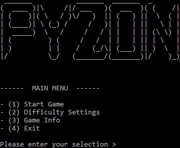
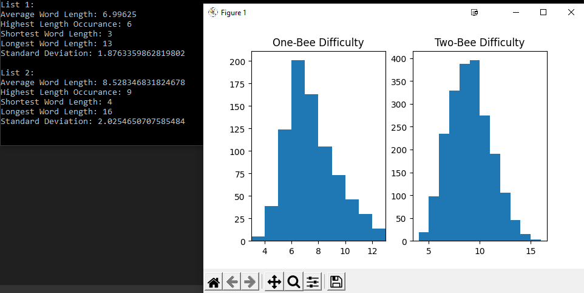
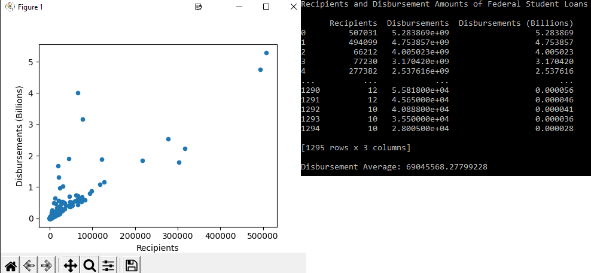

Rasmatazz - Project Portfolio
Project List

Creating a Text-Based Adventure Game Using Python
February 2022
Something done to have a little fun and stretch my coding skills: a text-based adventure
game akin to earlier games such as Zork and Spider and Web. This project is a work-in-progress
and will see continued improvements, adding new features and fixing issues as it is developed.
See more

Gathering and Formatting Data from National Spelling Bee Words With Python
February 2022
An interesting set of data that I came across one day was the list of Championship Words
for the Scripps National Spelling Bee. These words are the final words given and
successfully spelled by national champions across previous National Spelling Bees. Using
the official list found from their website...
See more

Processing Student Loan Data with Python & Pandas
December 2021
Using information available from varius U.S. Government databases, this project involved
taking information regarding student loan disbursement amounts and graphing them to identify
trends and outliers. The information was categorized by disbursement amount, program, and
number of recipients...
See more